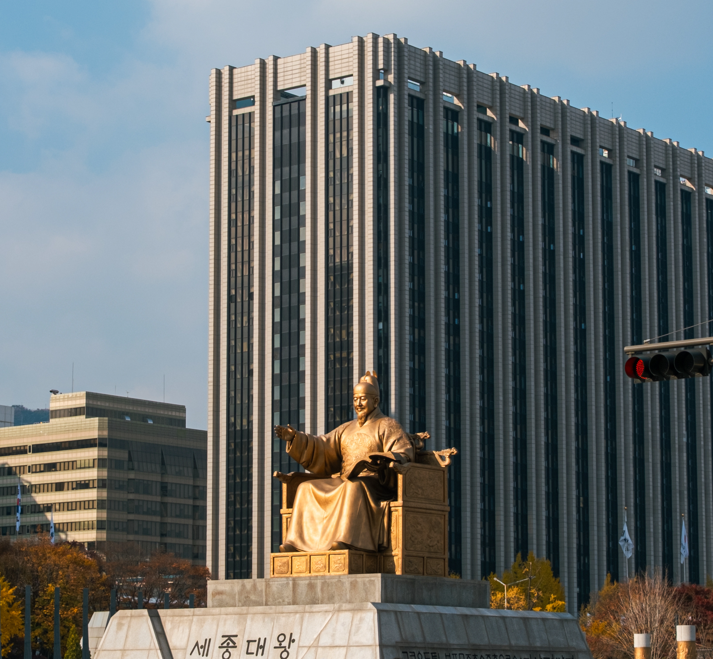
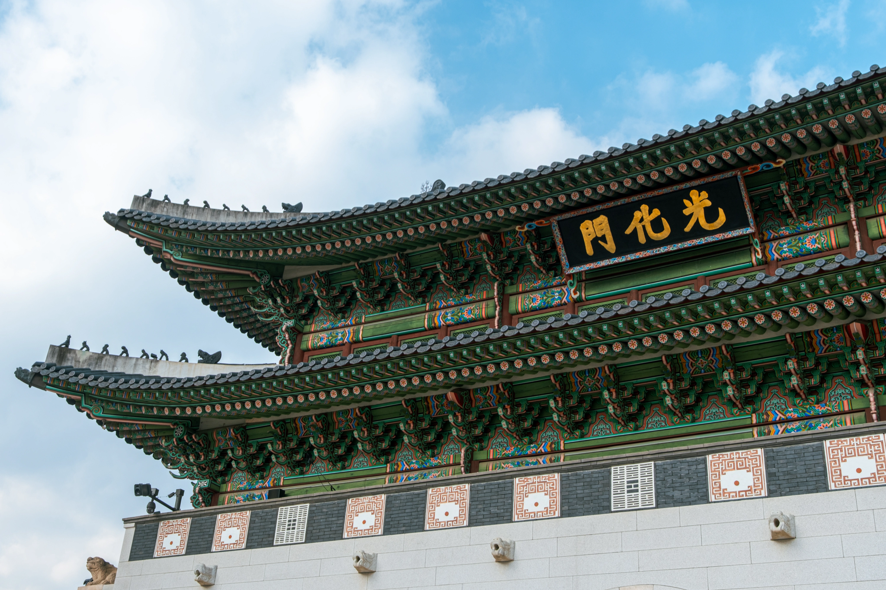
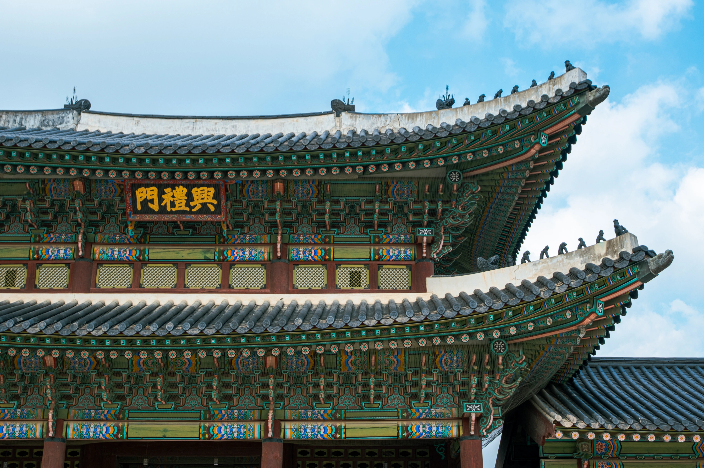
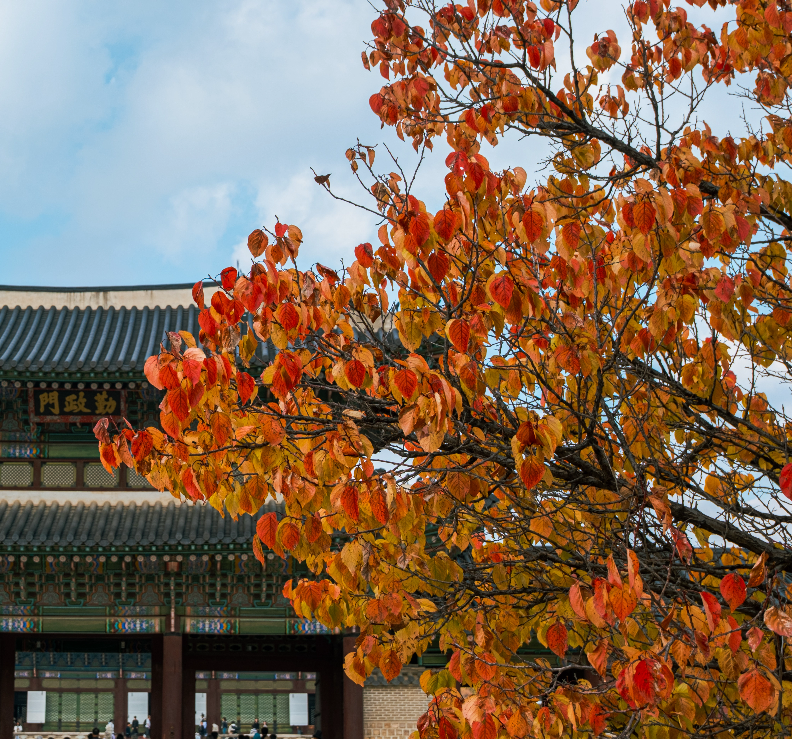
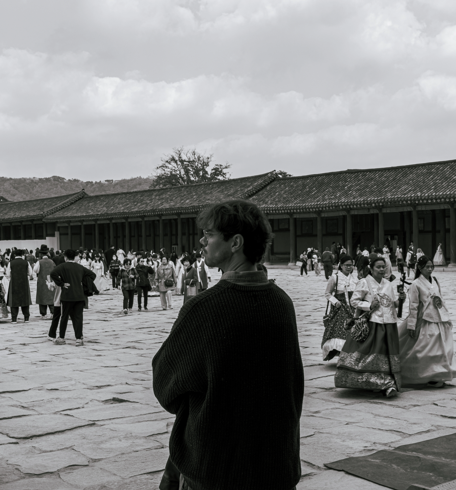
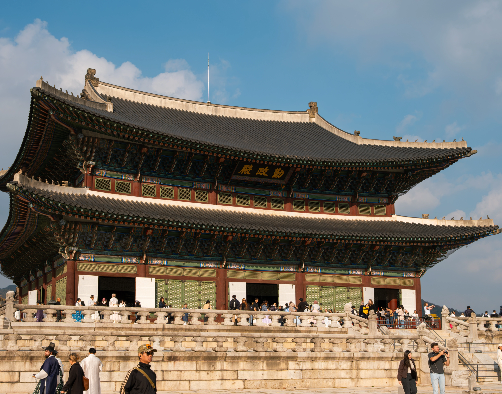
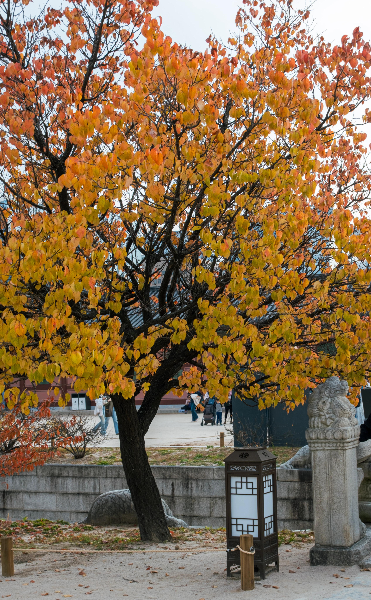

출처: 디지털 사진 갤러리 [원본 보기]
댓글
수집 당시 댓글 10개
않이웨앉뒌데 · 11.12 18:12:02
· Pen-F · 11.12 18:12:17
ㅇㅇ · 11.14 07:01:22
· ㅇㅇ · 11.14 07:56:36
· ㅇㅇ · 11.14 14:06:05
파도. · 11.14 07:07:46
ㅇㅇ · 11.14 07:13:10
ㅇㅇ · 11.14 08:26:01
ㅇㅇ · 11.14 10:22:04
ㅇㅇ · 11.14 15:04:59